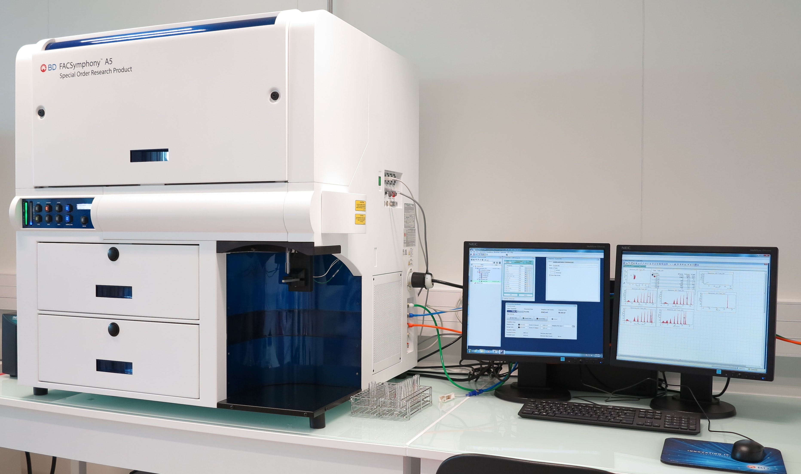
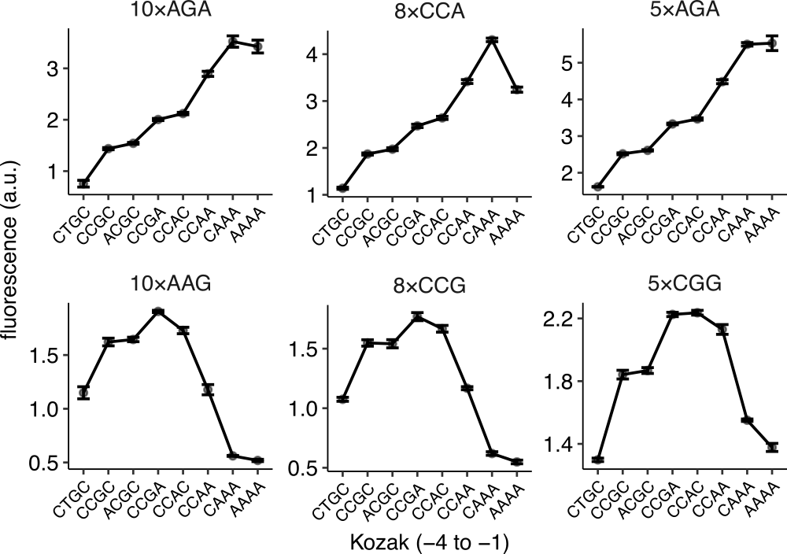
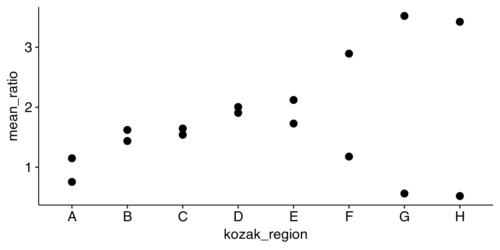
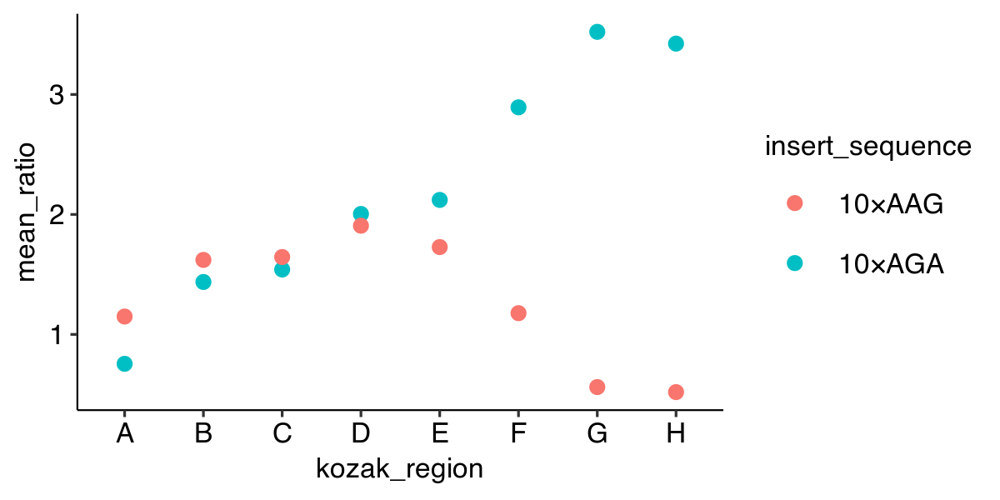
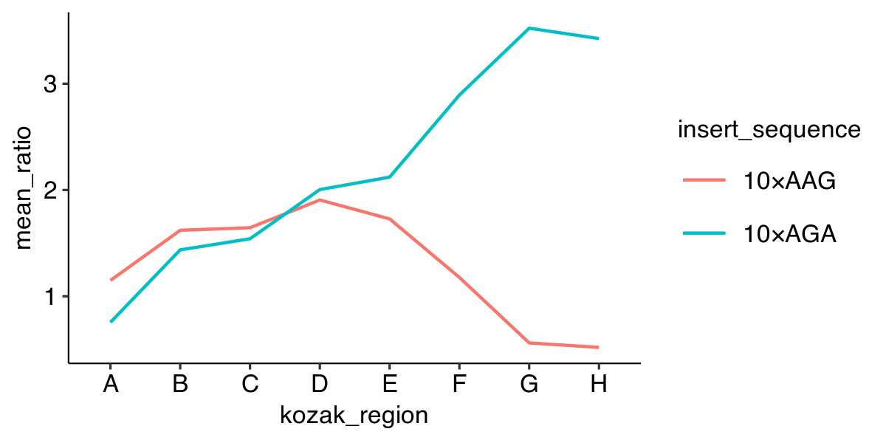
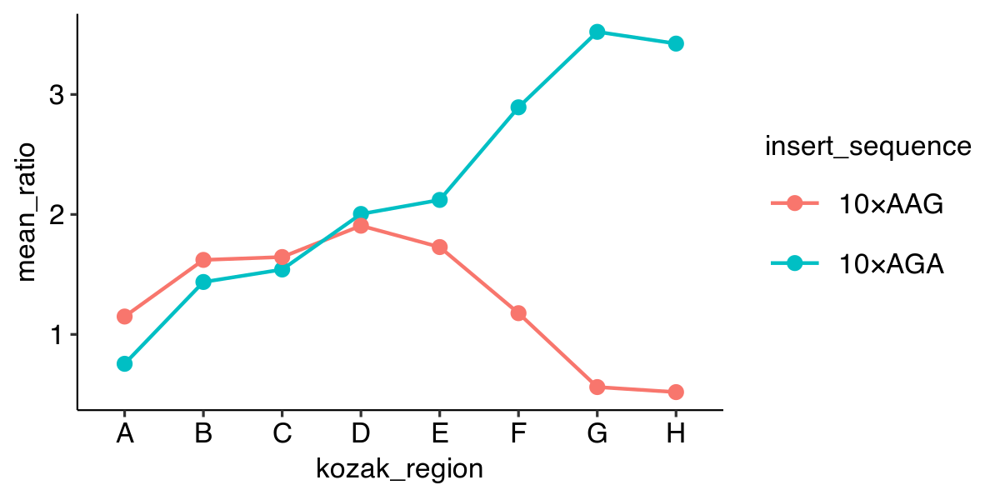
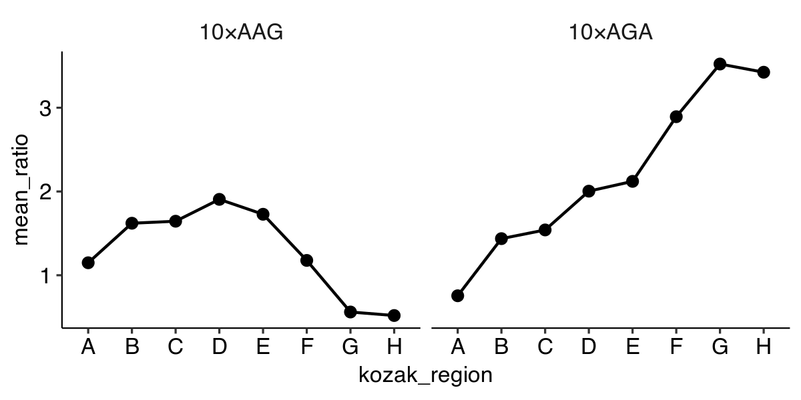

Lecture 4 – Visualize data using R / ggplot2
Arvind R. Subramaniam
Assistant Member
Basic Sciences Division and Computational Biology Program
Fred Hutchinson Cancer Research Center
What you will learn over the next 3 lectures
Loading, Transforming, Visualizing Tabular Data using Tidyverse packages
Principles of Data Visualization (see book)
Example Datasets
Plate Reader Assay

Flow Cytometry

Raw Flow Cytometry Data
| FSC.A | SSC.A | FITC.A | PE.Texas.Red.A | Time |
|---|---|---|---|---|
| 79033 | 69338 | 9173 | 18690 | 3.02 |
| 101336 | 87574 | 13184 | 29886 | 3.04 |
| 51737 | 56161 | 3083 | 18324 | 3.06 |
| 79904 | 45085 | 9957 | 18099 | 3.08 |
| 124491 | 97305 | 15739 | 28730 | 3.09 |
| 54359 | 45015 | 6175 | 11918 | 3.11 |
| 64615 | 88989 | 11907 | 32413 | 3.13 |
| 109592 | 64132 | 12561 | 18824 | 3.15 |
| 58503 | 116384 | 11591 | 27629 | 3.19 |
| 38634 | 51511 | 7200 | 21930 | 3.21 |
5 cols × 2,720,000 rows
Flow Cytometry Analysis Using Tidyverse

Tidyverse Functions for Working with Tabular Data
| Import/Export | Visualize | Transform |
|---|---|---|
read_tsv |
geom_point |
select |
write_tsv |
geom_line |
filter |
facet_grid |
arrange |
|
mutate |
||
join |
||
group_by |
||
summarize |
Use TSV and CSV file formats for tabular data
Tab-Separated Values:
strain mean_yfp mean_rfp mean_ratio se_ratio insert_sequence kozak_region schp674 1270 20316 0.561 0.004 10×AAG CAAA schp675 3687 20438 1.621 0.036 10×AAG CCGC schp676 2657 20223 1.177 0.048 10×AAG CCAA schp677 3967 20604 1.728 0.03 10×AAG CCAC
Comma-Separated Values:
strain,mean_yfp,mean_rfp,mean_ratio,se_ratio,insert_sequence,kozak_region schp674,1270,20316,0.561,0.004,10×AAG,CAAA schp675,3687,20438,1.621,0.036,10×AAG,CCGC schp676,2657,20223,1.177,0.048,10×AAG,CCAA schp677,3967,20604,1.728,0.03,10×AAG,CCAC
Reading tabular data into R
library(tidyverse) data <- read_tsv("data/example_dataset_1.tsv")
Read tabular data into a DataFrame (tibble)
library(tidyverse) data <- read_tsv("data/example_dataset_1.tsv") print(data, n = 5)
# A tibble: 16 x 7 strain mean_yfp mean_rfp mean_ratio se_ratio insert_sequence kozak_region <chr> <int> <int> <dbl> <dbl> <chr> <chr> 1 schp688 1748 20754 0.755 0.066 10×AGA A 2 schp684 3294 20585 1.44 0.021 10×AGA B 3 schp690 3535 20593 1.54 0.018 10×AGA C 4 schp687 4658 20860 2.00 0.021 10×AGA D 5 schp686 5000 21171 2.12 0.023 10×AGA E # ... with 11 more rows
Comment your code
# library to work with tabular data library(tidyverse) # read the tsv file into a tibble and # assign it to the 'data' variable data <- read_tsv("data/example_dataset_1.tsv") # display the contents of 'data' print(data, n = 5)
Plotting a point graph
ggplot(data, aes(x = kozak_region,
y = mean_ratio)) +
geom_point()

How do we show multiple experimental parameters?
| strain | meanratio | insertsequence | kozakregion |
|---|---|---|---|
| schp688 | 0.755 | 10×AGA | A |
| schp684 | 1.437 | 10×AGA | B |
| schp690 | 1.541 | 10×AGA | C |
| schp687 | 2.004 | 10×AGA | D |
| schp686 | 2.121 | 10×AGA | E |
| schp685 | 2.893 | 10×AGA | F |
| schp683 | 3.522 | 10×AGA | G |
| schp689 | 3.424 | 10×AGA | H |
| schp679 | 1.149 | 10×AAG | A |
| schp675 | 1.621 | 10×AAG | B |
| schp681 | 1.645 | 10×AAG | C |
| schp678 | 1.906 | 10×AAG | D |
| schp677 | 1.728 | 10×AAG | E |
| schp676 | 1.177 | 10×AAG | F |
| schp674 | 0.561 | 10×AAG | G |
| schp680 | 0.519 | 10×AAG | H |
Plotting a point graph with color
ggplot(data, aes(x = kozak_region,
y = mean_ratio,
color = insert_sequence)) +
geom_point()

Plotting a line graph
ggplot(data, aes(x = kozak_region,
y = mean_ratio,
color = insert_sequence,
group = insert_sequence)) +
geom_line()

Plotting point and line graphs
ggplot(data, aes(x = kozak_region,
y = mean_ratio,
color = insert_sequence,
group = insert_sequence)) +
geom_line() +
geom_point()

‘Faceting’ – Plotting in multiple panels
ggplot(data, aes(x = kozak_region,
y = mean_ratio,
group = insert_sequence)) +
geom_line() +
geom_point() +
facet_grid(~ insert_sequence)
